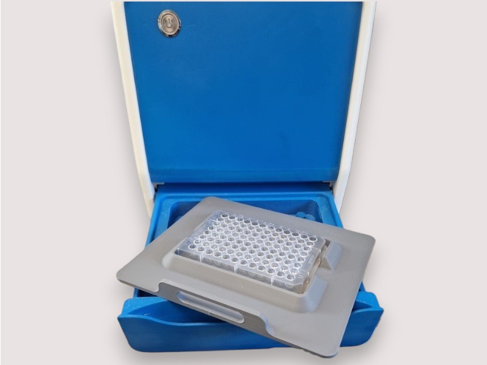

Mikrobot is an advanced AI and machine-learning driven reader platform developed by Mikrobio Ltd to modernise manual diagnostic testing workflows while retaining the simplicity and flexibility laboratories already trust.

Configurable Platform
Intelligent Image Analysis
Digital Traceability & Audit Trails
Bench-top & Safety Cabinet Use
Many laboratories continue to rely on manual interpretation for agglutination and plate-based testing. Mikrobot bridges the gap between traditional workflows and modern digital automation by:
